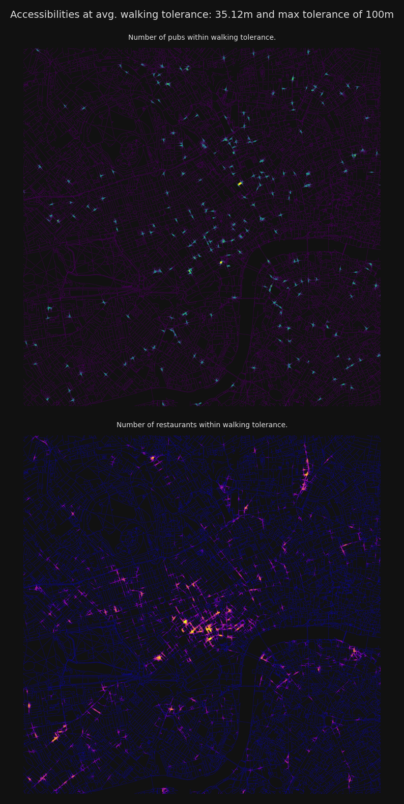
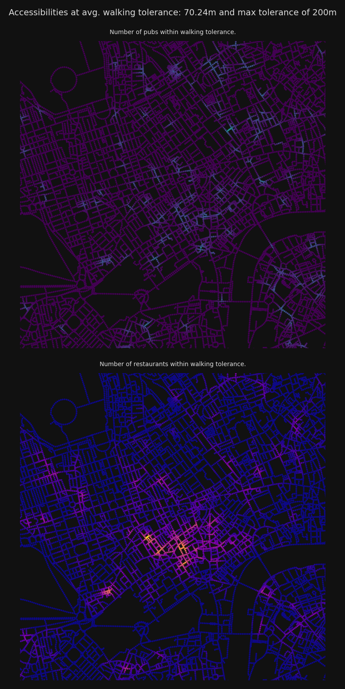
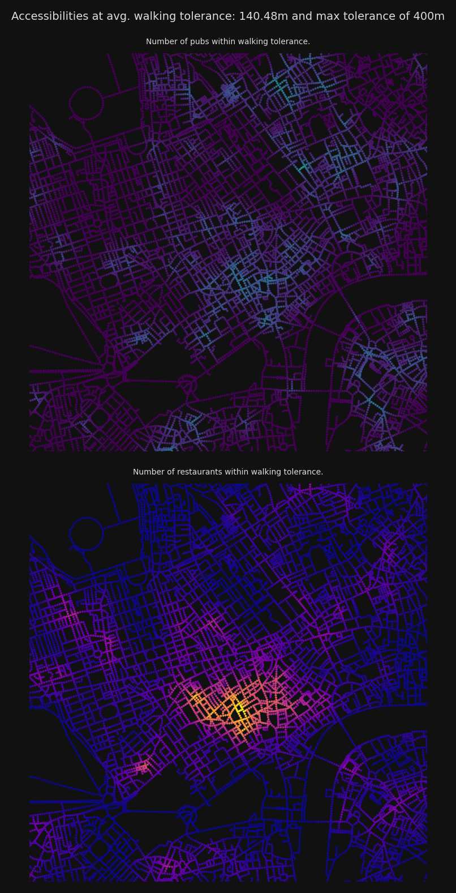
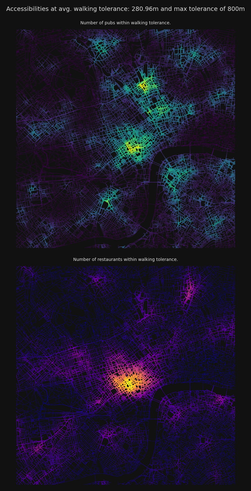
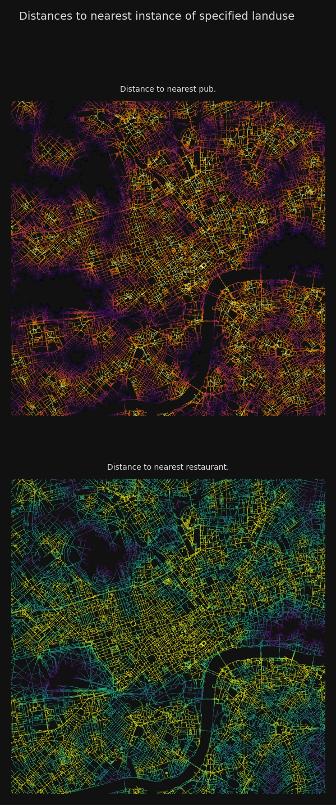

# !pip install --upgrade cityseerLondon Amenities
Install and update cityseer if necessary.
Data and preparation
This examples calculates landuse accessibility to pubs and restaurants for London
For additional information on network preparation, see the corresponding notebook on graph cleaning.
This example will make use of OSM data downloaded from the OSM API for a 5000m radius around London Soho.
The landuse amenity data is taken from OpenStreetMap via osmnx.
from cityseer.tools import graphs, io
# download from OSM
lng, lat = -0.13396079424572427, 51.51371088849723
buffer = 5000
plot_buffer = 3500
# creates a WGS shapely polygon
poly_wgs, _ = io.buffered_point_poly(lng, lat, buffer)
poly_utm, _ = io.buffered_point_poly(lng, lat, buffer, projected=True)
plot_bbox = poly_utm.centroid.buffer(plot_buffer).boundsPrepare the amenities GeoDataFrame.
# prepare data layer
from cityseer.metrics import layers
from osmnx import features
data_gdf = features.features_from_place(
"london", tags={"amenity": ["pub", "restaurant"]}
)
data_gdf = data_gdf.to_crs(
32630
) # to match EPSG code for UTM zone 30N per network data
data_gdf = data_gdf.loc["node"]
data_gdf = data_gdf.reset_index(level=0, drop=True)
data_gdf.index = data_gdf.index.astype(str)
# convert to the same UTM CRS as the network
data_gdf = data_gdf[["amenity", "geometry"]]
print(data_gdf.head()) amenity geometry
0 pub POINT (694282.233 5720372.951)
1 restaurant POINT (694353.653 5720508.222)
2 pub POINT (694189.282 5720228.905)
3 pub POINT (695475.171 5721895.793)
4 pub POINT (709733.415 5720007.168)Fetch and simplify the street network. The street network will be decomposed for a higher resolution analysis.
# generate OSM graph from polygon
G_utm = io.osm_graph_from_poly(poly_wgs, simplify=True, iron_edges=True)
# decompose for higher resolution analysis
G_decomp = graphs.nx_decompose(G_utm, 25)
# prepare the data structures
nodes_gdf, _edges_gdf, network_structure = io.network_structure_from_nx(
G_decomp, crs=32629
)INFO:cityseer.tools.io:Converting networkX graph from EPSG code 4326 to EPSG code 32630.
INFO:cityseer.tools.io:Processing node x, y coordinates.
100%|██████████| 158974/158974 [00:00<00:00, 448816.60it/s]
INFO:cityseer.tools.io:Processing edge geom coordinates, if present.
100%|██████████| 174746/174746 [00:00<00:00, 958047.36it/s]
INFO:cityseer.tools.graphs:Generating interpolated edge geometries.
100%|██████████| 174746/174746 [00:02<00:00, 69522.98it/s]
INFO:cityseer.tools.graphs:Removing filler nodes.
100%|██████████| 158974/158974 [00:20<00:00, 7661.52it/s]
INFO:cityseer.tools.graphs:Removing dangling nodes.
100%|██████████| 51042/51042 [00:00<00:00, 281125.34it/s]
INFO:cityseer.tools.graphs:Removing filler nodes.
100%|██████████| 44125/44125 [00:01<00:00, 41301.46it/s]
INFO:cityseer.tools.util:Creating nodes STR tree
100%|██████████| 40426/40426 [00:00<00:00, 100086.85it/s]
INFO:cityseer.tools.graphs:Consolidating nodes.
100%|██████████| 40426/40426 [00:11<00:00, 3640.98it/s]
INFO:cityseer.tools.graphs:Removing filler nodes.
100%|██████████| 28513/28513 [00:00<00:00, 159276.17it/s]
INFO:cityseer.tools.graphs:Merging parallel edges within buffer of 50.
100%|██████████| 43571/43571 [00:03<00:00, 11934.13it/s]
INFO:cityseer.tools.util:Creating edges STR tree.
100%|██████████| 40139/40139 [00:00<00:00, 691922.69it/s]
INFO:cityseer.tools.graphs:Splitting opposing edges.
100%|██████████| 28135/28135 [00:11<00:00, 2433.05it/s]
INFO:cityseer.tools.graphs:Merging parallel edges within buffer of 50.
100%|██████████| 41835/41835 [00:00<00:00, 220327.91it/s]
INFO:cityseer.tools.util:Creating nodes STR tree
100%|██████████| 29831/29831 [00:00<00:00, 100799.57it/s]
INFO:cityseer.tools.graphs:Consolidating nodes.
100%|██████████| 29831/29831 [00:05<00:00, 5392.59it/s]
INFO:cityseer.tools.graphs:Removing filler nodes.
100%|██████████| 25797/25797 [00:00<00:00, 59691.08it/s]
INFO:cityseer.tools.graphs:Merging parallel edges within buffer of 50.
100%|██████████| 37634/37634 [00:01<00:00, 20032.03it/s]
INFO:cityseer.tools.graphs:Removing filler nodes.
100%|██████████| 24356/24356 [00:00<00:00, 132270.32it/s]
INFO:cityseer.tools.graphs:Ironing edges.
100%|██████████| 34781/34781 [00:10<00:00, 3355.07it/s]
INFO:cityseer.tools.graphs:Merging parallel edges within buffer of 1.
100%|██████████| 34781/34781 [00:00<00:00, 189489.49it/s]
INFO:cityseer.tools.util:Creating edges STR tree.
100%|██████████| 34779/34779 [00:00<00:00, 719880.47it/s]
INFO:cityseer.tools.graphs:Splitting opposing edges.
100%|██████████| 23771/23771 [00:06<00:00, 3438.18it/s]
INFO:cityseer.tools.graphs:Merging parallel edges within buffer of 50.
100%|██████████| 34993/34993 [00:00<00:00, 55171.39it/s]
INFO:cityseer.tools.util:Creating nodes STR tree
100%|██████████| 23985/23985 [00:00<00:00, 109008.42it/s]
INFO:cityseer.tools.graphs:Consolidating nodes.
100%|██████████| 23985/23985 [00:02<00:00, 10589.26it/s]
INFO:cityseer.tools.graphs:Removing filler nodes.
100%|██████████| 23634/23634 [00:00<00:00, 429373.54it/s]
INFO:cityseer.tools.graphs:Merging parallel edges within buffer of 50.
100%|██████████| 34563/34563 [00:00<00:00, 117906.15it/s]
INFO:cityseer.tools.graphs:Removing filler nodes.
100%|██████████| 23568/23568 [00:00<00:00, 474414.40it/s]
INFO:cityseer.tools.graphs:Ironing edges.
100%|██████████| 34323/34323 [00:10<00:00, 3345.77it/s]
INFO:cityseer.tools.graphs:Merging parallel edges within buffer of 1.
100%|██████████| 34323/34323 [00:00<00:00, 193568.69it/s]
INFO:cityseer.tools.graphs:Decomposing graph to maximum edge lengths of 25.
100%|██████████| 34322/34322 [00:16<00:00, 2081.67it/s]
INFO:cityseer.tools.io:Preparing node and edge arrays from networkX graph.
100%|██████████| 90342/90342 [00:01<00:00, 83076.16it/s]
100%|██████████| 90342/90342 [00:13<00:00, 6772.80it/s]# compute pub accessibility
distances = [100, 200, 400, 800]
nodes_gdf, pubs_data_gdf = layers.compute_accessibilities(
data_gdf,
landuse_column_label="amenity",
accessibility_keys=["pub", "restaurant"],
nodes_gdf=nodes_gdf,
network_structure=network_structure,
distances=distances,
)INFO:cityseer.metrics.layers:Computing land-use accessibility for: pub, restaurant
100%|██████████| 90342/90342 [01:08<00:00, 1324.37it/s]The output GeoDataFrame will contain new columns for each landuse and distance combination. For each of these the following will have been computed:
- A count of reachable instances of a given landuse (within the specified distance thresholds)
- Similarly, a distance-weighted count of reachable locations
- The distance to the nearest instance of a given landuse. Where there are no reachable landuses for a given node within the specified distance threshold, then a
np.infvalue will be returned.
import matplotlib.pyplot as plt
import numpy as np
from cityseer import rustalgos
from cityseer.tools import plot
bg_colour = "#111"
text_colour = "#ddd"
font_size = 5
betas = rustalgos.betas_from_distances(distances)
avg_dists = rustalgos.avg_distances_for_betas(betas)
for d, b, avg_d in zip(distances, betas, avg_dists):
fig, axes = plt.subplots(2, 1, figsize=(8, 8), dpi=200, facecolor=bg_colour)
fig.suptitle(
f"Accessibilities at avg. walking tolerance: {avg_d:.2f}m and max tolerance of {d}m",
color=text_colour,
fontsize=7,
)
plot.plot_scatter(
axes[0],
network_structure.node_xs,
network_structure.node_ys,
nodes_gdf[f"cc_pub_{d}_wt"],
bbox_extents=plot_bbox,
cmap_key="viridis",
s_min=0.2,
s_max=2,
face_colour=bg_colour,
)
axes[0].set_title(
"Number of pubs within walking tolerance.",
color=text_colour,
fontsize=font_size,
)
plot.plot_scatter(
axes[1],
network_structure.node_xs,
network_structure.node_ys,
nodes_gdf[f"cc_restaurant_{d}_wt"],
bbox_extents=plot_bbox,
cmap_key="plasma",
s_min=0.2,
s_max=2,
face_colour=bg_colour,
)
axes[1].set_title(
"Number of restaurants within walking tolerance.",
color=text_colour,
fontsize=font_size,
)
fig.tight_layout()
plt.show()



fig, axes = plt.subplots(2, 1, figsize=(8, 8), dpi=200, facecolor=bg_colour)
fig.suptitle(
f"Distances to nearest instance of specified landuse",
color=text_colour,
fontsize=7,
)
dist_data = nodes_gdf[f"cc_pub_nearest_max_{max(distances)}"]
dist_data[np.isinf(dist_data)] = max(distances)
plot.plot_scatter(
axes[0],
network_structure.node_xs,
network_structure.node_ys,
dist_data,
bbox_extents=plot_bbox,
cmap_key="inferno_r",
s_min=0.2,
s_max=0.21,
face_colour=bg_colour,
)
axes[0].set_title("Distance to nearest pub.", color=text_colour, fontsize=font_size)
dist_data = nodes_gdf[f"cc_restaurant_nearest_max_{max(distances)}"]
dist_data[np.isinf(dist_data)] = max(distances)
plot.plot_scatter(
axes[1],
network_structure.node_xs,
network_structure.node_ys,
dist_data,
bbox_extents=plot_bbox,
cmap_key="viridis_r",
s_min=0.2,
s_max=0.21,
face_colour=bg_colour,
)
axes[1].set_title(
"Distance to nearest restaurant.", color=text_colour, fontsize=font_size
)/var/folders/bs/sq3p18cs4dn1ws4kpmfyk_3c0000gn/T/ipykernel_66498/4173652336.py:8: SettingWithCopyWarning:
A value is trying to be set on a copy of a slice from a DataFrame
See the caveats in the documentation: https://pandas.pydata.org/pandas-docs/stable/user_guide/indexing.html#returning-a-view-versus-a-copy
dist_data[np.isinf(dist_data)] = max(distances)
/var/folders/bs/sq3p18cs4dn1ws4kpmfyk_3c0000gn/T/ipykernel_66498/4173652336.py:22: SettingWithCopyWarning:
A value is trying to be set on a copy of a slice from a DataFrame
See the caveats in the documentation: https://pandas.pydata.org/pandas-docs/stable/user_guide/indexing.html#returning-a-view-versus-a-copy
dist_data[np.isinf(dist_data)] = max(distances)Text(0.5, 1.0, 'Distance to nearest restaurant.')